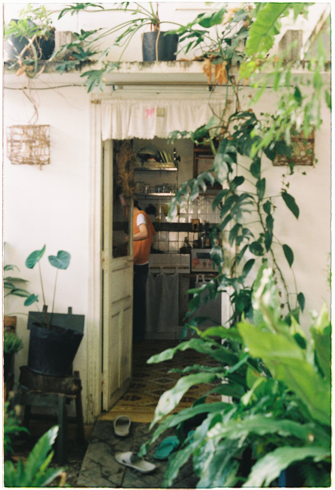
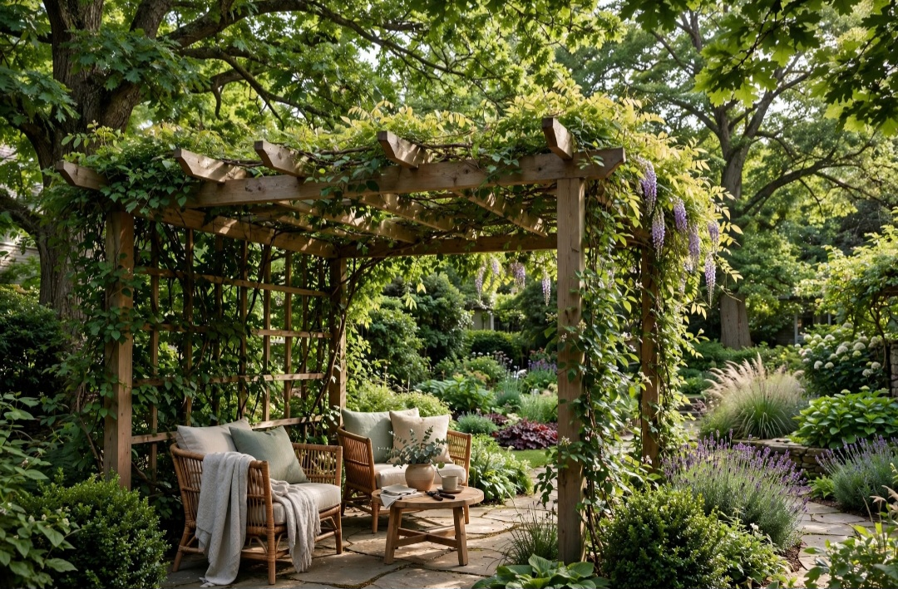

En este artículo
- Introducción
- El tamaño de la maceta y el desarrollo de las raíces
- Drenaje: un requisito esencial para la mayoría de las plantas
- Barro, cerámica, plástico, metal y otros materiales
- Elegir macetas según el lugar donde estarán
- Cómo combinar macetas sin perjudicar la funcionalidad
- Método práctico
- Preguntas frecuentes
- Conclusión
Introducción
Descubre cómo elegir las macetas adecuadas para cada tipo de planta con criterios prácticos de tamaño, materiales, mantenimiento, seguridad, funcionalidad y estilo para tomar una decisión adecuada.
Una buena elección empieza por comprender las condiciones reales del espacio y el uso que tendrá cada elemento. Antes de comprar, conviene medir, comparar materiales, revisar cuidados y pensar cómo cambiarán las necesidades con el tiempo.
El tamaño de la maceta y el desarrollo de las raíces
Elegir el tamaño correcto es uno de los primeros pasos para mantener una planta saludable. Una maceta demasiado pequeña limita el volumen de sustrato disponible y puede hacer que las raíces ocupen rápidamente todo el recipiente. Una maceta excesivamente grande tampoco es siempre mejor, porque retiene más humedad y puede dificultar el control del riego. Lo razonable es aumentar el diámetro de forma gradual cuando la planta realmente necesita un trasplante.
Observa las raíces, el ritmo de secado y el crecimiento. Si las raíces salen por los orificios, forman una masa muy compacta o la planta necesita agua con una frecuencia anormalmente alta, puede ser momento de cambiar de recipiente. Algunas especies toleran estar relativamente ajustadas y otras desarrollan sistemas radiculares más amplios, por lo que conviene conocer las necesidades concretas de cada planta.
La profundidad también importa. Plantas con raíces más verticales necesitan recipientes profundos, mientras especies de raíces superficiales pueden desarrollarse en macetas más anchas y bajas. En cactus y suculentas, por ejemplo, el tamaño debe acompañar el sistema radicular sin dejar un volumen enorme de sustrato húmedo alrededor.
Antes de trasplantar, compara el cepellón con la nueva maceta. Evita pasar de un recipiente pequeño a otro desproporcionadamente grande solo para no trasplantar de nuevo. El crecimiento saludable depende de equilibrio entre raíces, sustrato, aire y agua.
Drenaje: un requisito esencial para la mayoría de las plantas
Los orificios de drenaje permiten que el exceso de agua salga después del riego. Sin esa salida, el sustrato puede permanecer saturado durante demasiado tiempo y reducir el oxígeno disponible para las raíces. Por eso, una maceta decorativa sin agujeros funciona mejor como cubremaceta que como recipiente de cultivo directo, salvo que el sistema esté específicamente diseñado para gestionar el agua.
No es necesario llenar el fondo con una gruesa capa de piedras para “crear drenaje”. Lo importante es que el recipiente tenga salida y que el sustrato sea apropiado para la especie. Coloca una pequeña malla si necesitas evitar que parte del sustrato escape, pero no bloquees los agujeros.
Los platos bajo las macetas protegen muebles y suelos, aunque deben vaciarse cuando acumulan agua. Dejar el recipiente permanentemente dentro de un plato lleno puede mantener la zona inferior demasiado húmeda. En macetas de exterior, comprueba después de lluvias fuertes que los orificios no estén obstruidos por raíces, hojas o tierra.
En sistemas de autorriego, sigue las instrucciones del fabricante. Estos recipientes pueden ser útiles para determinadas plantas y rutinas, pero no eliminan la necesidad de observar humedad, raíces y condiciones ambientales. Una herramienta de riego debe adaptarse a la planta, no al revés.

Barro, cerámica, plástico, metal y otros materiales
La terracota es porosa y permite cierto intercambio de humedad a través de sus paredes. Puede favorecer un secado más rápido, algo útil para plantas sensibles al exceso de agua, aunque también exige riegos más frecuentes en ambientes cálidos. Además, los recipientes grandes de barro pueden ser pesados y algunos sufren con heladas.
La cerámica esmaltada ofrece una enorme variedad estética y suele retener más humedad que la terracota sin esmaltar. Revisa siempre que tenga drenaje. El plástico es ligero, económico y conserva la humedad durante más tiempo; resulta práctico para plantas grandes que deben moverse o para interiores donde el peso es importante.
El metal puede aportar un aspecto contemporáneo, pero se calienta con el sol y puede transmitir temperaturas extremas al sustrato. En exterior debe considerarse también la corrosión. La madera puede funcionar en jardineras si está preparada para ese uso y se gestiona correctamente la humedad.
No existe un material universalmente superior. La elección debe considerar clima, ubicación, peso, frecuencia de riego, estética y necesidades de la especie. Dos plantas iguales pueden requerir rutinas distintas si una está en terracota al sol y otra en plástico dentro de casa.
Elegir macetas según el lugar donde estarán
En interiores, mide la superficie disponible y comprueba que el recipiente sea estable. Una maceta alta en un paso estrecho puede volcarse con facilidad. Protege suelos y muebles de humedad y evita colocar recipientes pesados sobre estantes que no estén diseñados para soportarlos.
En balcones y terrazas, considera viento, lluvia y exposición solar. Los recipientes ligeros pueden necesitar mayor estabilidad, mientras los muy pesados dificultan reorganizar el espacio. No coloques jardineras sobre barandillas con soportes improvisados y respeta las normas del edificio.
La luz disponible determina qué planta puede ocupar cada ubicación, pero también afecta al recipiente. Una maceta oscura expuesta a sol intenso puede calentarse mucho. En zonas muy luminosas, observa la temperatura del sustrato y ajusta material, posición o protección cuando sea necesario.
Agrupar macetas puede crear una composición atractiva y facilitar el cuidado si las plantas tienen necesidades similares. Combina alturas sin bloquear la luz de especies pequeñas y deja acceso suficiente para regar, limpiar y revisar plagas.
Cómo combinar macetas sin perjudicar la funcionalidad
La decoración funciona mejor cuando la maceta acompaña a la planta en vez de competir con ella. Puedes repetir un material, una gama de colores o una forma para crear continuidad. No hace falta comprar una colección idéntica: piezas diferentes pueden convivir si comparten algún rasgo visual.
Considera la escala. Una planta de hojas grandes puede necesitar un recipiente con presencia, mientras una especie delicada suele verse mejor en una maceta proporcionada. Los cubremacetas permiten cambiar el aspecto sin alterar el recipiente de cultivo, siempre que puedas retirar el exceso de agua.

En composiciones de varias plantas, alterna alturas y deja espacios de descanso visual. Colocar muchas macetas pequeñas dispersas puede producir sensación de desorden. Agruparlas en conjuntos controlados suele facilitar tanto la decoración como el mantenimiento.
Prioriza siempre estabilidad, drenaje y tamaño antes del acabado. Una maceta bonita que dificulta el cuidado terminará siendo una mala elección. La estética debe apoyar una solución de cultivo que pueda mantenerse durante años.
Un método práctico para tomar la decisión final
Antes de comprar, escribe tres columnas: necesidades obligatorias, preferencias y límites. En la primera coloca aquello que afecta al funcionamiento; en la segunda, color, estilo o acabados; en la tercera, presupuesto, medidas y mantenimiento. Este ejercicio evita que una característica atractiva haga olvidar un requisito esencial.
Compara varias opciones utilizando los mismos criterios. No te limites a fotografías: revisa dimensiones, composición, instrucciones, garantía y condiciones de uso. Cuando sea posible, observa una muestra físicamente y comprueba cómo se comporta con la luz y los materiales del entorno.
Calcula también el coste de mantener la elección. Productos de limpieza, tratamientos periódicos, repuestos o instalación pueden cambiar el presupuesto real. Una opción razonable es aquella que puedes cuidar correctamente sin convertir el mantenimiento en una carga.
Finalmente, evita decidir con prisa. Una compra que permanecerá años merece una revisión adicional. Si todavía tienes dudas entre dos alternativas, vuelve a la función principal y elige la que resuelva mejor el uso cotidiano.
Cuándo cambiar una planta de maceta
No trasplantes únicamente porque ha pasado cierto número de meses. Observa señales: raíces muy compactas, crecimiento detenido durante la temporada activa, sustrato degradado o una relación inestable entre planta y recipiente. Si la planta está sana y el sistema funciona, no siempre necesita un cambio inmediato.
Al trasplantar, utiliza sustrato adecuado y manipula las raíces con cuidado. Después, adapta riego y exposición a las necesidades de la especie. Un recipiente nuevo modifica la cantidad de sustrato que retiene agua, por lo que la rutina anterior puede necesitar ajustes.
Cómo cambia el riego según la maceta
El recipiente modifica la velocidad con la que el sustrato pierde agua. Una maceta porosa, pequeña y expuesta a sol puede secarse mucho antes que una de plástico grande situada en sombra. Por eso no conviene regar todas las plantas de la casa siguiendo un calendario idéntico. Comprueba la humedad del sustrato y conoce las necesidades de cada especie.

Después de cambiar de maceta, observa durante varias semanas. Un volumen mayor de sustrato puede tardar más en secarse y exigir menos frecuencia. En cambio, una planta trasladada a un lugar más luminoso puede consumir agua con mayor rapidez. Ajusta según señales reales.
El peso del recipiente puede servir como referencia cuando aprendes a conocer una planta: una maceta recién regada pesa más que cuando el sustrato ha perdido buena parte de la humedad. Este método no sustituye la observación, pero ayuda a evitar riegos automáticos.
Macetas grandes y plantas de gran tamaño
Las plantas grandes necesitan estabilidad. Un recipiente demasiado ligero puede volcarse si la copa es alta o si está cerca de una corriente de aire. Considera una base amplia y un material con peso suficiente, pero comprueba también la resistencia del suelo o mueble donde se colocará.
Antes de llenar una maceta grande, decide su ubicación definitiva. Una vez añadidos sustrato y planta puede resultar difícil moverla. Bases con ruedas diseñadas para la carga pueden ayudar en interiores, siempre que sean estables y no dañen el pavimento.
No rellenes un recipiente enorme con materiales improvisados únicamente para reducir sustrato si eso compromete drenaje o estabilidad. Si la planta no necesita tanto volumen, elige una maceta interior proporcionada y utiliza un cubremaceta exterior de mayor tamaño.
Ejemplos de criterios para distintos grupos de plantas
Las suculentas y muchos cactus suelen agradecer recipientes que no mantengan el sustrato húmedo durante demasiado tiempo. Un tamaño proporcionado, drenaje libre y un sustrato apropiado son más importantes que una maceta enorme. En ambientes húmedos, un material poroso puede ayudar a que el conjunto se seque con mayor rapidez.
Plantas tropicales de hojas grandes pueden consumir más agua durante su crecimiento y algunas desarrollan raíces abundantes. Aun así, el trasplante debe hacerse de forma gradual. Las especies trepadoras pueden necesitar además espacio para instalar tutores o soportes sin dañar raíces.
Hierbas culinarias tienen necesidades diferentes entre sí. Romero y otras especies mediterráneas no deben gestionarse exactamente como albahaca o menta. Si las cultivas juntas, asegúrate de que compartan necesidades razonablemente compatibles.
Orquídeas epífitas suelen utilizar recipientes y sustratos especiales que favorecen aireación. No las trates como una planta terrestre convencional. Investigar el tipo de planta antes de elegir recipiente evita aplicar reglas demasiado generales.
Preguntas frecuentes
¿Cuál es la mejor manera de empezar?
Empieza definiendo las condiciones reales de uso y comparando opciones según el tema de cómo elegir las macetas adecuadas para cada tipo de planta. Medir, observar y revisar las especificaciones evita muchas decisiones equivocadas.
¿Cuánto tiempo se necesita para ver resultados?
La elección puede hacerse en poco tiempo si las necesidades están claras, pero conviene comparar varias opciones y probar muestras o medidas antes de realizar una compra o intervención definitiva.
¿Qué errores deberían evitarse?
Los errores más frecuentes son elegir solo por apariencia, ignorar medidas y condiciones ambientales, no considerar el mantenimiento y utilizar materiales o sistemas que no son apropiados para el uso previsto.
Conclusión
Cómo elegir las macetas adecuadas para cada tipo de planta es más sencillo cuando la decisión combina función, dimensiones, mantenimiento, seguridad y estética. Comparar opciones con criterios concretos permite evitar compras impulsivas y conseguir un resultado que se adapte mejor a la vida cotidiana.